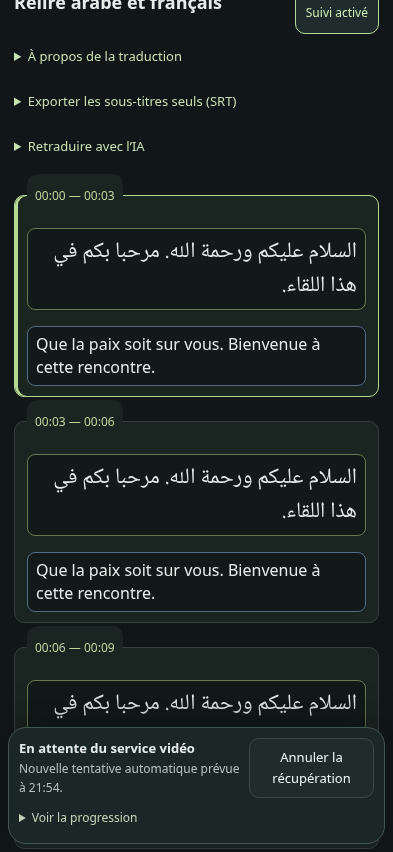
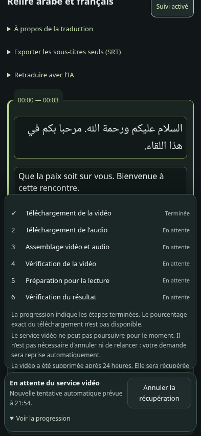
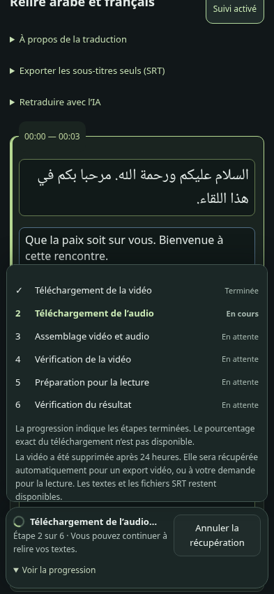
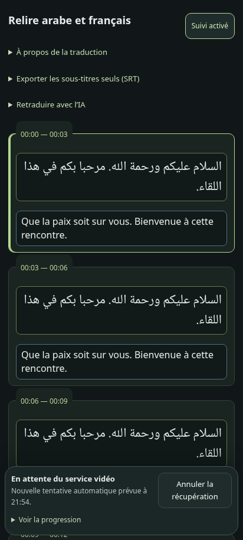
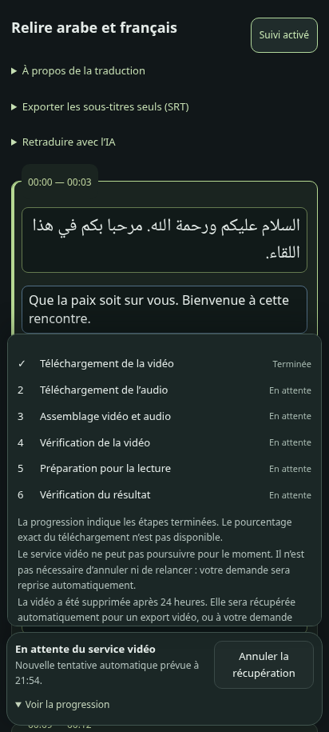
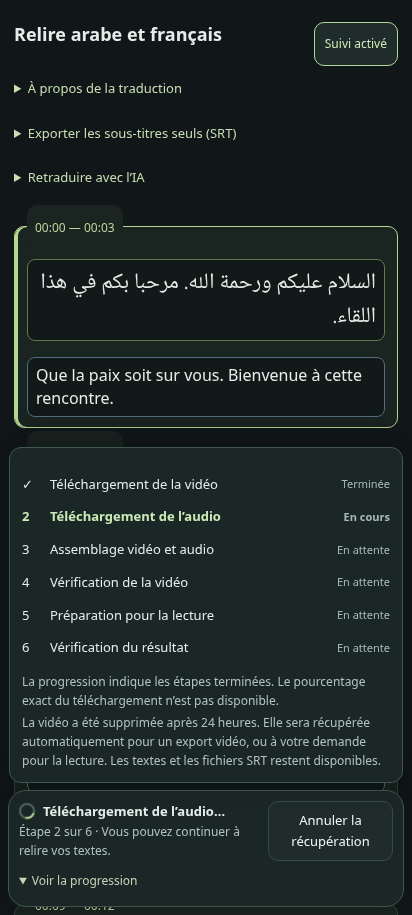
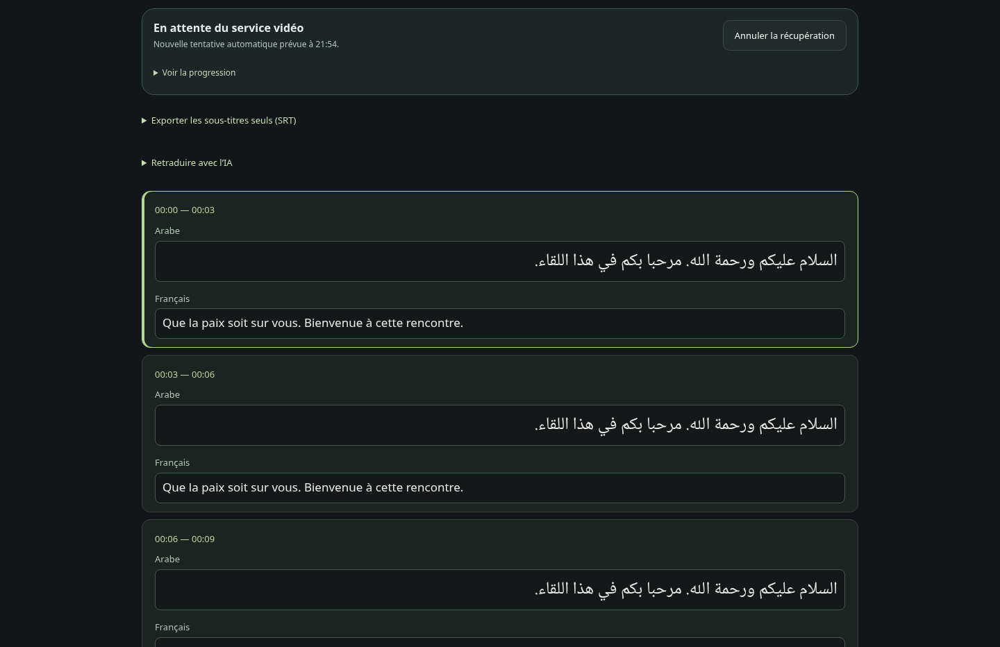
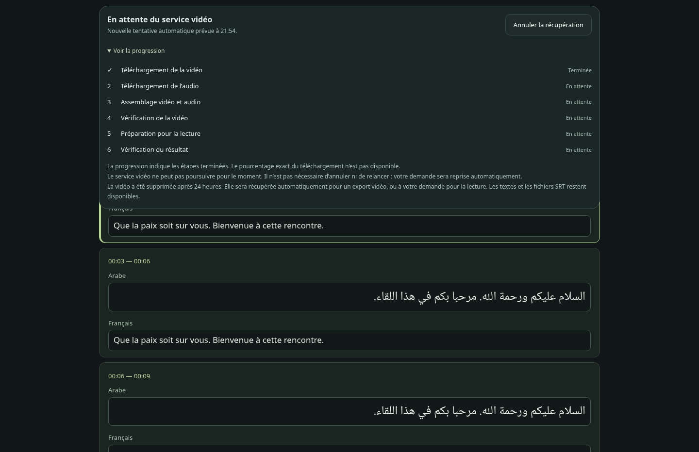
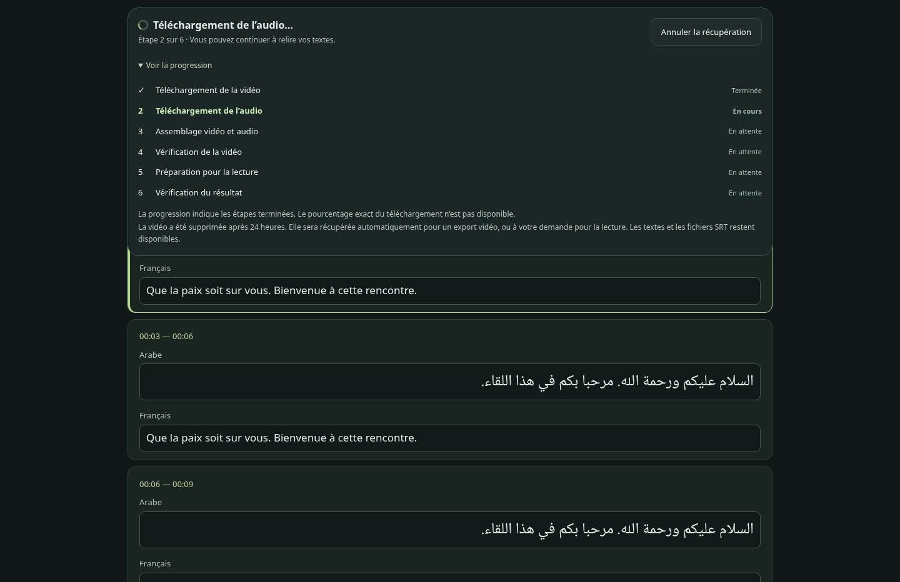

Candidate locale, non déployée. Captures Playwright Chromium aux dimensions ordinateur, iPhone et Pixel. États d’API simulés : ces captures ne prouvent pas un téléchargement réel. Le refus 429 du service média reste à résoudre.








